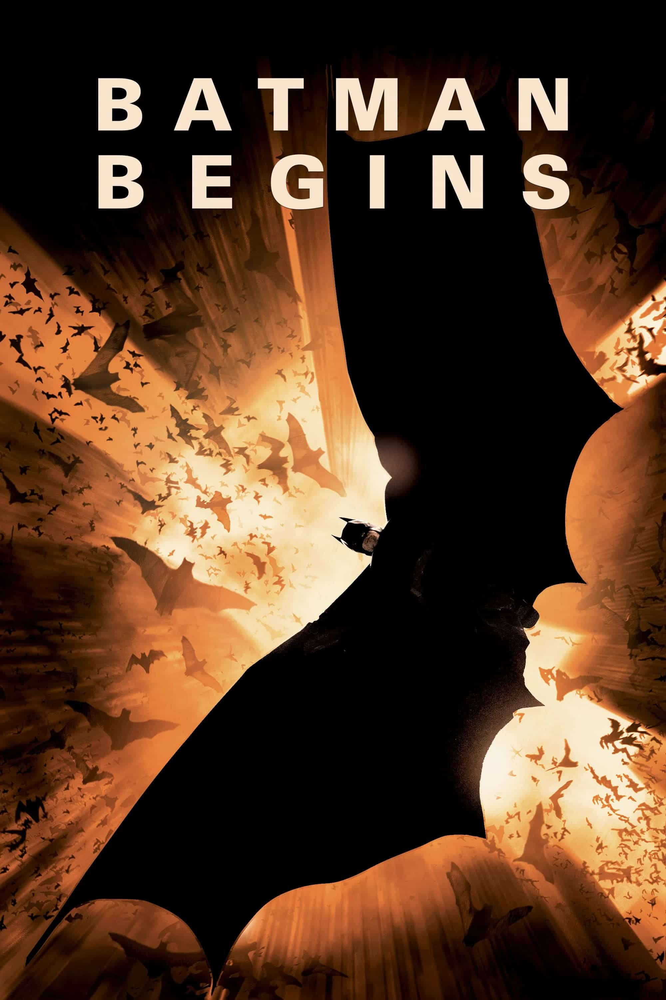
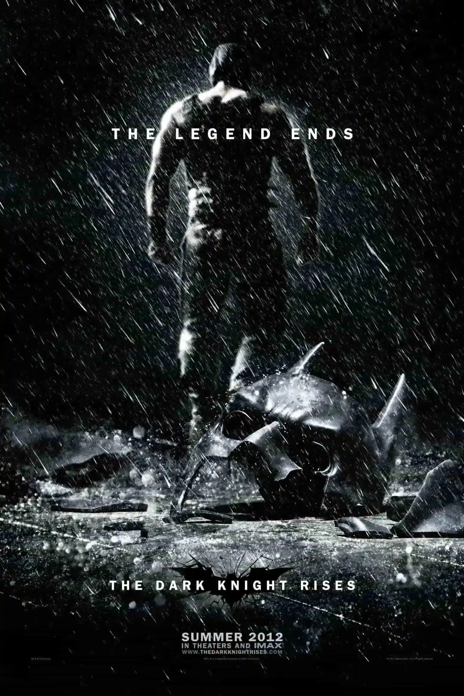

Galería multimedia  El poster de la película The Dark Knight  Intro Batman: The brave and the bold Tu navegador no soporta el elemento de audio Descargar el archivo de audio Avance de The Batman Part II Tu navegador no soporta el elemento de video Descargar el archivo de video